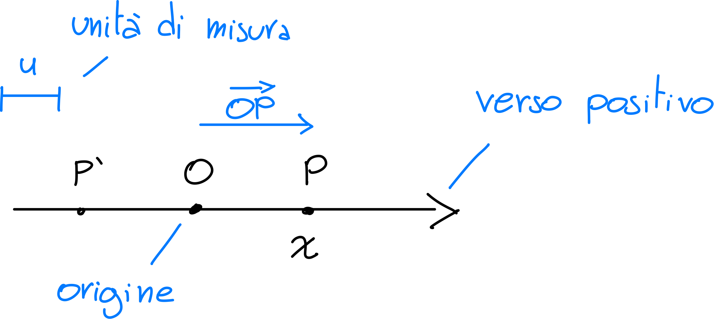
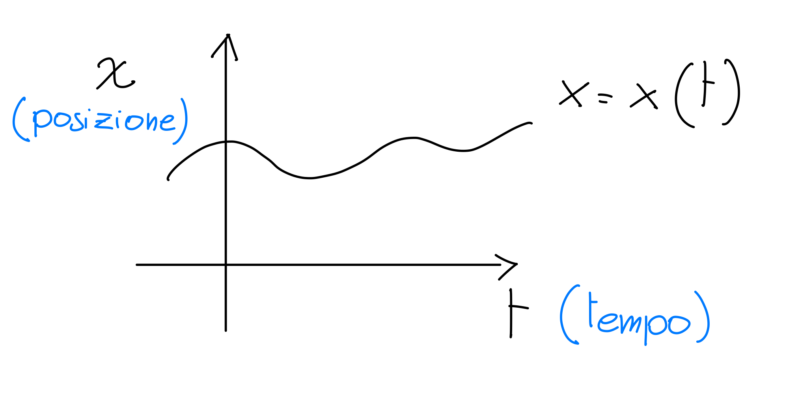
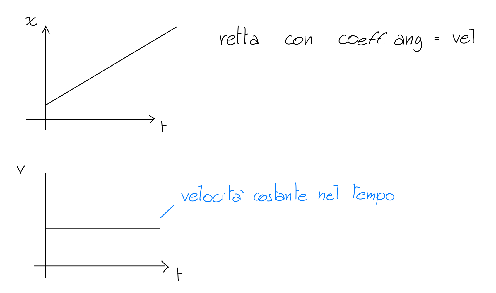
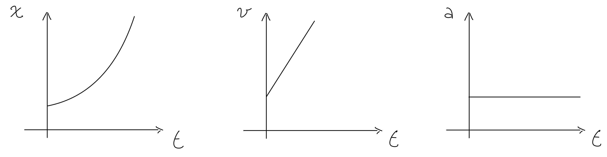
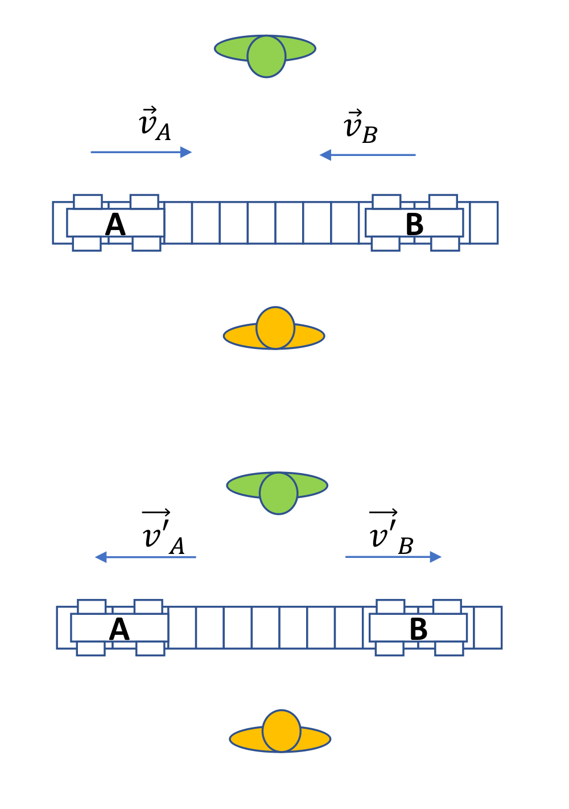
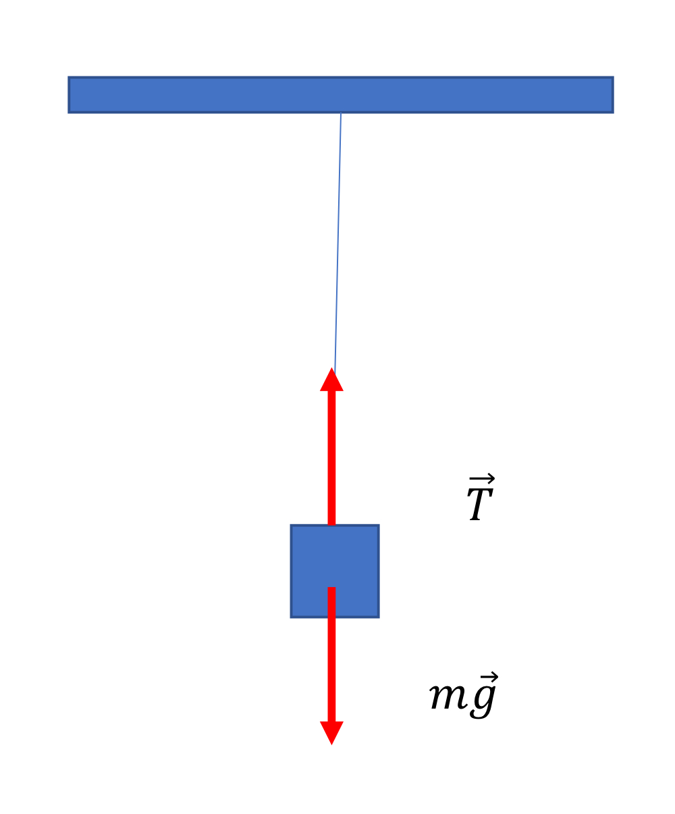
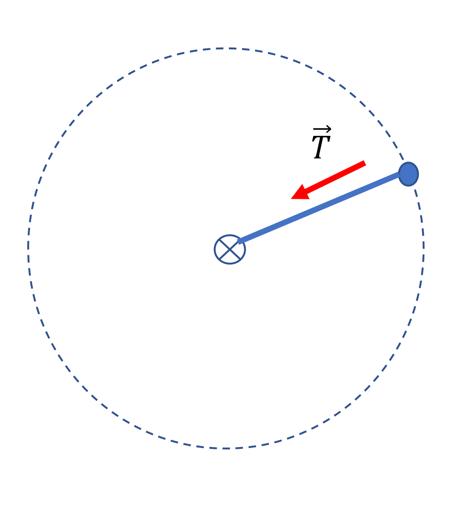
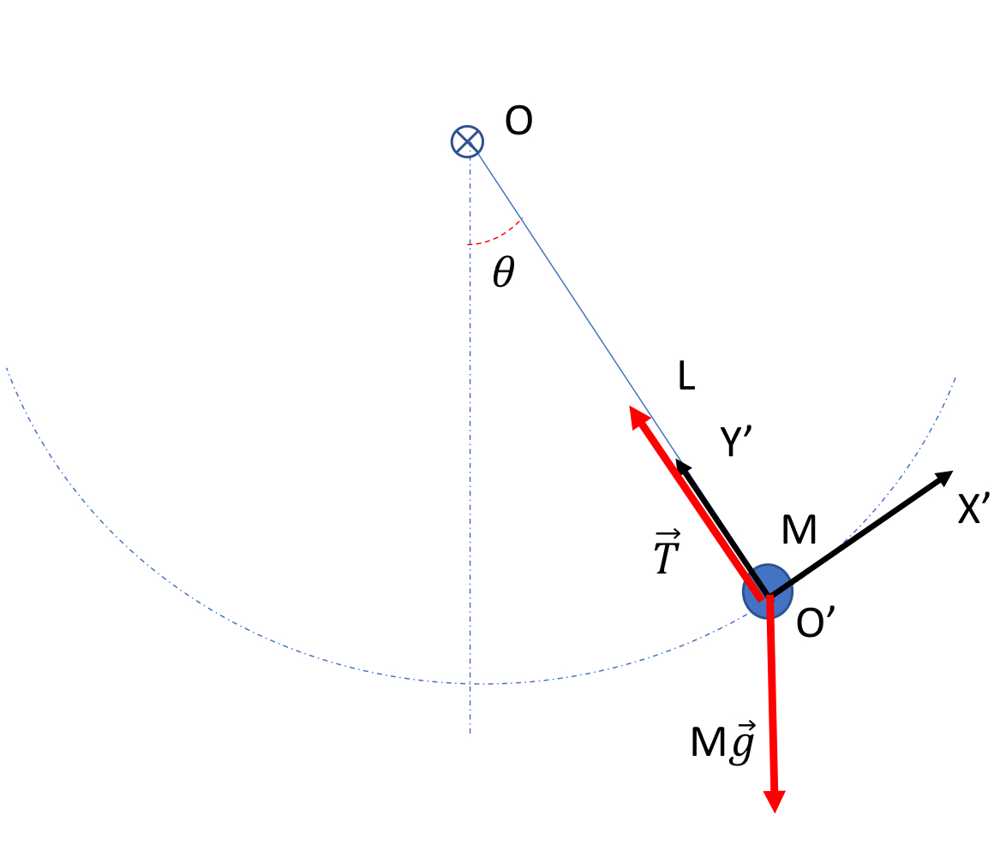
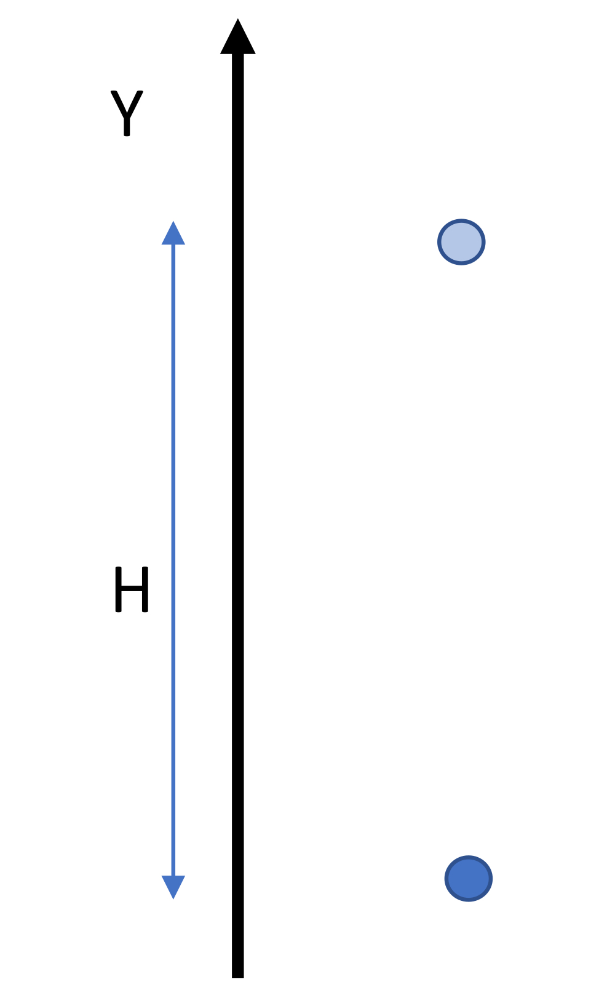

Fisica
Fisica parte 1 - Cinematica
RISULTATO DI MISURA: $ x + x $
\(x\) = valore di misura
\(\Delta x\) = incertezza di misura
MISURA INDIRETTA $ Y = F(X_1, X_2, … , X_n) $
\(Y\) = grandezza derivata
\(F\) = funzione
\(X_1, X_2, ... , X_n\) = grandezze fisiche
GRANDEZZE FONDAMENTALI:
| Grandezza | Unità di misura | Simbolo |
|---|---|---|
| Massa | chilogrammo | kg |
| Lunghezza | metro | m |
| Tempo | secondo | s |
| Temperatura | kelvin | K |
| Quantità di sostanza | mole | mol |
| Intensità di corrente | ampere | A |
| Intensità luminosa | candela | cd |
CALCOLO DIMENSIONALE:
omogenee = stesse dimensioni
- \(A = B\ \iff\ [A] = [B]\) omogenee
- \(A+B\ \iff\ [A] = [B]\) omogenee
- \([A\cdot B]\ \iff\ [A]\cdot[B]\) prodotto di dimensioni
- \([\Pi] \iff 1\) costanti sono adimensionali
CIFRE SIGNIFICATIVE:
\(S: (97 \pm 1)m\)
\(\Delta T = (22 \pm 1)m\)
| $ S T $ | 21 | 23 |
|---|---|---|
| 96 | 4.571… | 4.173… |
| 98 | 4.619… | 4.217… |
\(Vm\) varia da 4.619 - 4.173 = 0.446
errore massimo assoluto:
\(Vm = (4.409... \pm 0.223...) m/s\)
$ Vm = (4.4 ) m/s$
\(0.2\) ordine grandezza errore
NOTAZIONE SCIENTIFICA ED ERRORI:
\(250 \pm 10\) → \((2.50 \pm 0.10) \cdot 10^2\)
\(30.0 \pm 0.2\) → \((3.00 \pm 0.02) \cdot 10^1\)
\(0.0005 \pm 0.001\) → \((5 \pm 1) \cdot 10^{-3}\)
CIFRE SIGNIFICATIVE OPERAZIONI:
SOMMA: \(A=2.5 \cdot 10^2 , B=30.0\) → $ A+B = 2.8 ^2 $
notare ordine di grandezza di \(A\) sono le decine, di \(B\) sono i decimi
PRODOTTO: \(A=2.5 \cdot 10^2 , B=30.0\) → $ AB = 7.5 ^3 $
notare che \(A\) ha 2 cifre significative, \(B\) ne ha 3, quindi il risultato avrà 2 cifre significative
FUNZIONE UNARIA: \(A=2.5 \cdot 10^2\) → $ = 1.6 ^1 $
notare che \(A\) ha 2 cifre significative, quindi il risultato avrà 2 cifre significative
CINEMATICA
CINEMATICA: descrizione del moto dei corpi
POSIZIONE: relativa a un PUNTO DI RIFERIMENTO
ASSE COORDINATO:
\(P = x = \vec{OP}\)
$ = $

$ x \[\begin{cases} \vert \vec{OP} \vert \text{ se } \vec{OP} \text{ concorde nel verso positivo} \\\\ - \vert \vec{OP} \vert \text{ se } \vec{OP} \text{ discorde nel verso positivo} \end{cases}\]$
DUE DIMENSIONI:
Legge oraria del moto
descrive la posizione in un dato istante

Moto rettilineo uniforme
intervalli di tempo uguali = spostamenti uguali
LEGGE ORARIA:
\[x(t) = At + x_0\]
\(x_0\): posizione iniziale
\(t\): istante di tempo
\(A\): costante di proporzionalità
\(n\Delta x=A \cdot n\Delta t\) con \(n\) numero di istanti
VELOCITÀ MEDIA: \[v_m = \frac{\Delta x}{\Delta t}\]
VELOCITÀ ISTANTANEA: \[v = \lim_{\Delta t \to 0} \frac{\Delta x}{\Delta t}\]

Moto rettilineo uniformemente accelerato
accelerazione costante, velocità aumenta linearmente
\(v(t) = Bt + v_0\)
\(a_m = \frac{\Delta v}{\Delta t}\)
\(v(t) = a_m t + v_0\)
ACCELERAZIONE MEDIA: \[a_m = \frac{\Delta v}{\Delta t}\]
ACCELERAZIONE ISTANTANEA: \[a(t) = \lim_{\Delta t \to 0} \frac{\Delta v}{\Delta t} = \frac{dv(t)}{dt}\]

IN BREVE
SPAZIO: legge oraria \(x = x(t)\)
VELOCITÀ: derivata della legge oraria \(v = \frac{dx}{dt}\)
ACCELERAZIONE: derivata della velocità \(a = \frac{dv}{dt} = \frac{d^2x}{dt}\)
Interludio matematico
basi di matematica
Moto uniformemente accelerato
| 1 dimensione | |
|---|---|
| legge oraria: | \[ x(t) = \frac{1}{2} a_0 t^2 + v_0 t + x_0 \] |
| velocità: | \[ v(t) = a_0 t + v_0 \] |
| accelerazione: | \[ a(t) = a_0 \] |
| 2 dimensioni | |
|---|---|
| legge oraria: | \[ \vec{r}(t) = \frac{1}{2} \vec{a_0} t^2 + \vec{v_0} t + \vec{r_0} \] |
| velocità: | \[ \vec{v}(t) = \vec{a_0} t + \vec{v_0}\] |
| accelerazione: | \[ \vec{a}(t) = \vec{a} \] |
Scegliamo asse y parallelo ad \(a_0\)
In questo modo scomponiamo il moto in due moti indipendenti:
- componente $ P_y $: moto uniformemente accelerato
- componente $ P_x $: moto rettilineo uniforme
Ottenendo quindi
\[ \begin{cases} x(t) = v_{0x} t + x_0 \\\\ y(t) = \frac{1}{2} a_0 t^2 + v_{0y} t + y_0 \end{cases} \]
Moto armonico
La legge oraria del moto armonico è:
\[ x(t) = x_0 \cos(\omega t + \varphi_0) \]
ed è caratterizzata dai 3 parametri:
- \(x_0\): ampiezza del moto
- \(\omega\): frequenza angolare o pulsazione
- \(\varphi_0\): fase iniziale
\(\omega_0\): pulsazione
La posizione in $ t $ e in $ t+T $ deve essere la stessa, per definizione di periodo \(T\).
Poichè \(\cos\) ha periodo \(2\pi\), si ricava la seguente relazione:
\[ \omega_0 T = 2\pi \qquad T = \frac{2\pi}{\omega_0} \qquad \omega_0 =\frac{2\pi}{T} \]
\(x_0\): ampiezza
\(x(t)\) oscilla tra \(-x_0\) e \(x_0\). Questo si può facilmente dimostrare considerando $ x = x_0 (t + _0) $, in quanto la funzione \(\cos\) oscilla tra -1 e 1 indipendentemente dall’argomento.
\[ x_{\max} = x_0 \cdot \cos_{\max} = x_0 \cdot 1 = x_0 \\\\ x_{\min} = x_0 \cdot \cos_{\min} = x_0 \cdot (-1) = -x_0 \]
\(\varphi_0\): fase iniziale
disallineamento della funzione rispetto all’origine degli istanti di tempo. Poichè la funzione è
\[
x(t) = x_0 \cos(\omega_0 t + \varphi_0) \\\\ x = x_0 \cos(\alpha + k)
\]
possiamo facilmente osservare che \(\varphi_0 = k\) indica il disallineamento rispetto allo zero del coseno ponendo \(t=0\).
Velocità del moto armonico
Poichè abbiamo \(x(t) = x_0 \cos(\omega_0 t + \varphi_0)\), possiamo ricavare la velocità derivando la legge oraria:
\[
v(t) = \frac{dx}{dt} = -\omega_0 x_0 \sin(\omega_0 t + \varphi_0)
\]
Osservo attentamente che:
- ampiezza dipende dalla pulsazione: \(-x_0 \omega_0, +x_0 \omega_0\)
- fase invariata: \(\varphi_0\)
- periodo invariato: \(T = \frac{2\pi}{\omega_0}\)
Accelerazione del moto armonico
Analogamente, ricaviamo l’accelerazione derivando la velocità:
\[ a(t) = -\omega_0^2 \cdot x_0 \cos(\omega_0 t + \varphi_0) = -\omega_0^2 \cdot x(t) \]
Noto : \(x_0 \cos(\omega_0 t + \varphi_0) = x(t)\)
Osserviamo che:
- ampiezza dipende dalla pulsazione: \(-x_0 \omega_0^2, +x_0 \omega_0^2\)
- fase invariata: \(\varphi_0\)
- periodo invariato: \(T = \frac{2\pi}{\omega_0}\)
L’accelerazione è proporzionale alla posizione del corpo.
Relazione $ x^2 _0^2 + v^2 $
Considerando la quantità $ x^2 _0^2 + v^2 $, sostituiamo \(x\) e \(v\) con le rispettive leggi orarie:
\[ x^2 \omega_0^2 + v^2 = x_0^2 \omega_0^2 \]
ovvero una quantità che rimane costante nel moto, conservandosi.
Moto circolare
moto che avviene lungo una circonferenza di raggio \(R\) con centro in \(O\).
La legge oraria risulta pertanto essere:
\[ \theta = \theta t \]
in un moto essenzialmente unidimensionale, con
- velocità angolare \(\omega = \frac{d\Theta}{dt}\)
- accelerazione angolare \(\alpha = \frac{d\omega}{dt}\)
Moto circolare uniforme
Moto nel quale la velocità angolare è costante
\[ \Theta = \omega_0 t + \theta_0 \]
con velocità angolare $ = _0 $ e accelerazione angolare $ = 0 $.
Nel piano cartesiano pertanto le due componenti risultano essere:
\[ \begin{cases} x(t) = R \cos(\omega_0 t + \theta_0) \\\\ y(t) = R \sin(\omega_0 t + \theta_0) \end{cases} \]
Derivando il sistema per ottenere la velocità delle componenti, otteniamo:
\[ \begin{cases} v_x(t) = -R \omega_0 \sin(\omega_0 t + \theta_0) \\\\ v_y(t) = R \omega_0 \cos(\omega_0 t + \theta_0) \end{cases} \]
Il vettore velocità \(\vec{v}\) risulta ortogonale a \(\vec{r}\), con modulo \[v = R \vert \omega_0 \vert\]
Mentre l’accelerazione risulta essere:
\[ \vert \vec{a} \vert = R \omega_0^2 \]
Nel caso del moto circolare uniforme, l’accelerazione centripeta rivolta verso \(O\) è l’unica componente non nulla dell’accelerazione.
Moto circolare vario
Nel caso considerassimo un moto circolare con legge oraria \(\vartheta(t)\) qualsiasi funzione, otteniamo:
\[ \text{legge oraria:} \quad \begin{cases} x(t) = R \cos(\vartheta(t)) \\\\ y(t) = R \sin(\vartheta(t)) \end{cases} \]
In questo caso, la velocità è una derivata di una composta, ricordando che \(\vartheta ' = \omega(t)\):
\[ \text{velocità:} \quad \begin{cases} v_x(t) = -R \sin(\vartheta(t)) \cdot \omega(t) \\\\ v_y(t) = R \cos(\vartheta(t)) \cdot \omega(t) \end{cases} \]
Derivando ulteriormente, otteniamo l’accelerazione:
\[ \text{accelerazione:} \quad \begin{cases} a_x(t) = -R \cos(\vartheta(t)) \cdot \omega (t)^2 - R \sin(\vartheta(t)) \cdot \alpha(t) \\\\ a_y(t) = -R \sin(\vartheta(t)) \cdot \omega (t)^2 + R \cos(\vartheta(t)) \cdot \alpha(t) \end{cases} \]
Ne deduciamo che:
\[ \vec{a}(t) = R \alpha(t) \hat{t} -R \omega(t)^2 \hat{r} = \alpha_{tang} \hat{t} + \alpha_{centr} \hat{r} \]
L’accelerazione tiene conto di:
-componente centripeta (verso \(O\)): \(-R \omega(t)^2\hat{r}\)
-componente tangenziale (verso il senso di rotazione): \(R \alpha(t) \hat{\theta}\)
parte 2 - Dinamica
Un corpo tende a conservare proprio moto (velocità si conserva, accelerazione nulla) finché non avviene un’interazione con l’ambiente esterno
Sistemi di riferimento inerziali
Principio di inerzia: esiste classe di sistemi di riferimento inerziali per i quali un corpo non sottoposto a interazioni con l’ambiente esterno permane nel suo stato di moto.
Massa e quantità di moto
- due corpi \(A\) e \(B\) si scontrano, la loro velocità varia: \(\vec{v_A} \rightarrow \vec{v_A '}\) e \(\vec{v_B} \rightarrow \vec{v_B '}\)
- in particolare consideriamo \(\vec{v_A} = - \vec{v_B}\) e lo scontro frontale di due oggetti identici su una traiettoria retta

- ne segue che la variazione della velocità risulta: \(\Delta \vec{v_A} = -\Delta \vec{v_B}\) indipendentemente dall’osservatore e anche indipendentemente da un termine di trascinamento.
- aggiungendo un oggetto \(X\) al corpo \(B\) (ad esempio una massa) e ripetendo l’esperimento, osserviamo che \(\Delta \vec{v_A} < -\Delta \vec{v_B}\), ovvero la variazione di velocità di \(A\) è minore in modulo rispetto a quella di \(B\). In questo caso la relazione è \(\Delta \vec{v_A} = - K(A,B+X) \cdot \Delta \vec{v_B}\).
- tale \(K\) costante di proporzionalità è definita massa inerziale
- pertanto possiamo riscrivere la relazione precedente come \(m_A \Delta \vec{v_A} = - m_B \Delta \vec{v_B}\)
- possiamo quindi definire la quantita di moto come \(\vec{p} = m \vec{v}\), con \(m\) massa inerziale e \(\vec{v}\) velocità del corpo
quantita di moto \(p\): prodotto tra massa e velocità \(p = m \cdot v\)
impulso \(I\): variazione della quantità di moto \(I = \Delta \vec{p}\)
forza \(F\): variazione della quantità di moto per unità di tempo \[F = \lim_{\Delta t \to 0} \frac{\vec{I}}{\Delta t}\]
Da cui conseguono le 3 leggi della Dinamica così formulate:
- principio di inerzia
- legge del moto: data \(R = \sum_i F_i\) risultante di tutte le forze che agiscono su un corpo, si ha \[R = \frac{d\vec{p}}{dt} \implies \vec{R} = m\vec{a}\] in quanto la massa inerziale si conserva
- principio di azione e reazione: l’interazione tra due coppie di forze \(\vec{F_A}\) e \(\vec{F_B}\) è tale che \(\vec{F_A} = -\vec{F_B}\)
Forze elastiche
Analizziamo la relazione tra l’allungamento \(\Delta L\) e l’intensità della forza applicata \(F\)
Considerando deformazioni abbastanza piccole da essere considerate elastiche, otteniamo:
\[ F = K \cdot \Delta L \]
Con \(K\) costante elastica: a valori più alti corrispondono oggetti più rigidi
Esiste però anche una quantità chiamata tensione. Dalla legge di Hooke, possiamo ricavare la seguente relazione:
\[ \vec{T}= -K \vec{\Delta L} \]
Fune inestensibile
Prendiamo due esempi:

Consideriamo di una massa \(m\) sospesa al soffitto tramite cavo in condizioni statiche.
La situazione di equilibrio è data dalla relazione \(T + mg = 0\)

Consideriamo una massa che ruota su un piano, in cui la massa è collaga al cavo di lunghezza \(L\) il quale è fissato a un punto del piano.
Se in un dato istante la massa \(m\) ha velocità \(v\), la sua \(a_{\text{centr}} = \frac{v^2}{L}\), per cui \(T = m \cdot a_{\text{centr}} = m \frac{v^2}{L}\)
La tensione deriva dalla cinematica della forza del corpo in entrambi i casi.
Attrito
Forza generata dal contatto tra due corpi, che si oppone al moto relativo tra di essi.
- proporzionale alla forza normale \(N\) che agisce tra i corpi
- non contiene riferimenti all’area di contatto tra i corpi
\[ F_{attr} = \mu_{din} \cdot N \]
Immaginiamo due spazzole con le rispettive setole incastrate. Supponiamo di applicare due forze uguali e contrarie ai corpi. Se le due forze non sono abbastanza intense, le setole si deformeranno ma le spazzole non si muoveranno, dinamicamente i corpi risulteranno fermi.
Questo fenomeno lo spieghiamo con due forze vincolari \(\vec{F}_{stat}\) dette forze di attrito statico
Non hanno una direzione prefissata, ma la direzione è contenuta nel piano della superficie di contatto tra i corpi, opponendosi al relativo moto.
Ha un valore massimo \(F^{stat}_{max}\). Superato questo valore, i corpi iniziano a muoversi.
\(F_{stat} \leq F^{stat} _{max} = \mu _{stat} \cdot N\)
Ne consgue anche che $ {din} < {stat} $, entrambi non negativi (e nei nostri casi minori di 1)
Pendolo
Il pendolo è un sistema è costituito da una massa \(M\) di dimensioni trascurabili, sospesa a un filo inestensibile di lunghezza \(L\) privo di massa.

- la posizione del corpo è descritta da \(\theta\): è sufficiente in quanto la distanza da \(O\) è sempre \(L\)
Le forze agenti sono:
la forza peso \(F_P = M \vec{g}\)
la tensione della fune \(T\)
Equazione del moto diventa:
\[ \begin{cases} M a_{\text{tang}} = - Mg \sin(\theta) \\\\ M a_{\text{centr}} = T - Mg \cos(\theta) \end{cases} \]
\(Y'\) determina unicamente la tensione della fune
Invece \(a_{\text{tang}} = L \cdot \theta ''\), da cui otteniamo $ M L ’’ = - Mg () $
Riconduciamo tutto a:
\[ \theta '' = - \frac{g}{L} \sin(\theta) \]
\(\sin(\theta) \approx \theta\) per \(\theta\) piccoli, da cui otteniamo \(\theta '' = - \frac{g}{L} \theta\)
Formule essenziali moto del pendolo
Pertanto in un moto armonico con pulsazione:
\[ \omega = \sqrt{\frac{g}{L}} \]
l’equazione del moto diventa:
\[ \theta(t) = \theta_0 \cos(\omega t + \varphi_0) \]
con periodo:
\[ T = \frac{2\pi}{\omega} = 2\pi \sqrt{\frac{L}{g}} \]
Il moto pertanto risulta indipendente dalla massa \(M\) e dall’ampiezza \(\theta_0\) (in questa approssimazione).
Energia
definizione approssimativa di energia:
energia: se è possibile prevedere con esattezza l’evoluzione dello stato di un sistema fisico, allora esiste una grandezza calcolata sulle grandezze che definiscono questo stato, che si conserva nel tempo.
esempi con macchine virtuali.
Energia cinetica
Consideriamo il moto di un grave che cade da un’altezza \(h\), partendo da una situazione di quiete.

La sua variazione di energia potenziale è la seguente:
\[ \Delta U_{peso} = \Delta (ymg) = - Hmg \]
L’energia dunque non si è conservata. Questo perché dobbiamo considerare anche il suo stato di moto:
\[ K = \frac{1}{2} m v^2 \]
da completare
Principio di conservazione dell’energia meccanica
Per un sistema isolato, l’energia totale del sistema si conserva nella evoluzione di quest’ultimo
Lavoro
Data una forza \(\vec{F}\) supponiamo che il suo punto di applicazione si sposti da \(\vec{r_1}\) a \(\vec{r_2}\) lungo una traiettoria \(C\). Definiamo lavoro:
\[ L = \int_{\vec{r_1}}^{\vec{r_2}} \vec{F} \cdot d\vec{r} \]
Nel caso di una forza costante, otteniamo:
\[ L = \vert \vec{F} \vert \cdot \vert \Delta \vec{r} \vert \cdot \cos(\theta) \]
Con l’angolo \(\theta\) compreso tra direzione della forza e quello dello spostamento.
Non vale per le forze non costanti, ad esempio per la forza elastica (formula)